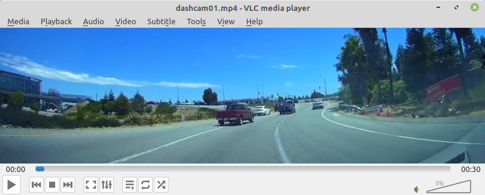
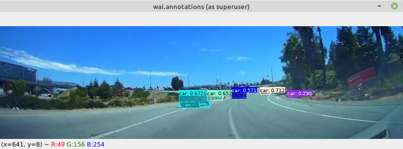

Object detection
In this example we are using a prebuilt yolov5 model (using MS-COCO) to make predictions on the frames that come from a dashcam video, overlay the predictions on the images and display them. For the model we will be using an existing docker container.
Requirements#
NB: No GPU required.
Additional image-dataset-converter libraries:
Data#
Input#

Output#

Preparation#
NB: Place all the downloads in the current directory
- Download the dashcam01.mp4 video from the BoofCV project
- Download the yolo5n.pt model
- Download the coco.yaml data description for the yolo5n model
- Create a directory called
cachein the current directory -
The host machine must have a Redis server instance running. Two options:
- Install it natively via
sudo apt-get install redis(and then restart it withsudo systemctl restart redis) - Spin up a docker container with:
docker run --net=host --name redis-server -d redis
- Install it natively via
Yolov5 model#
The following command launches a Yolov5 model via the container's yolov5_predict_redis command,
running on the CPU:
docker run \
--net=host -u $(id -u):$(id -g) \
-v `pwd`:/workspace \
-it waikatodatamining/pytorch-yolov5:2022-01-21_cpu \
yolov5_predict_redis \
--redis_in images \
--redis_out predictions \
--model /workspace/yolov5n.pt \
--data /workspace/coco.yaml
image-dataset-converter (direct prediction)#
The following pipeline loads every 2nd frame from the dashcam01.mp4 video, obtains predictions from the Yolov5 model (using the Redis backend), overlays the predictions and then displays them:
idc-convert \
-l INFO \
from-video-file \
-i ./dashcam01.mp4 \
-n 2 \
-t od \
redis-predict-od \
--channel_out images \
--channel_in predictions \
--timeout 1.0 \
add-annotation-overlay-od \
--outline_alpha 255 \
--outline_thickness 1 \
--fill \
--fill_alpha 128 \
--vary_colors \
--font_size 10 \
--text_format "{label}: {score}" \
--text_placement T,L \
--force_bbox \
image-viewer \
--size 800,224 \
--delay 1
image-dataset-converter (via meta-sub-images)#
Like the above example, but uses the meta-sub-images filter to split the incoming images into two
and sends them to the model one-by-one, then assembles the predictions and forwards them:
idc-convert \
-l INFO \
from-video-file \
-i ./dashcam01.mp4 \
-n 2 \
-t od \
meta-sub-images \
-l INFO \
-r 0,0,400,224 400,0,400,224 \
--merge_adjacent_polygons \
--base_filter "redis-predict-od --channel_out images --channel_in predictions --timeout 1.0" \
add-annotation-overlay-od \
--outline_alpha 255 \
--outline_thickness 1 \
--fill \
--fill_alpha 128 \
--vary_colors \
--font_size 10 \
--text_format "{label}: {score}" \
--text_placement T,L \
--force_bbox \
image-viewer \
--size 800,224 \
--delay 1
NB:
- Requires the image-dataset-converter-imgaug library.
- Meta-data of merged polygons gets lost apart from the label (
type), which has to be the same, and anyscorevalues, which get averaged.